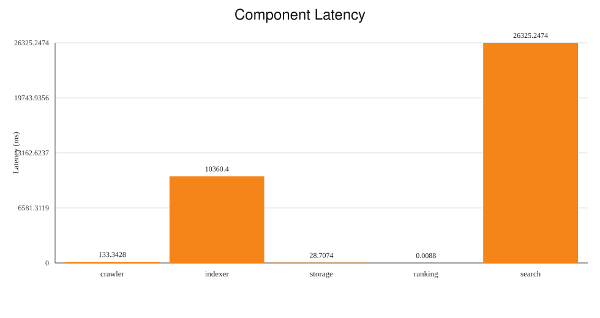
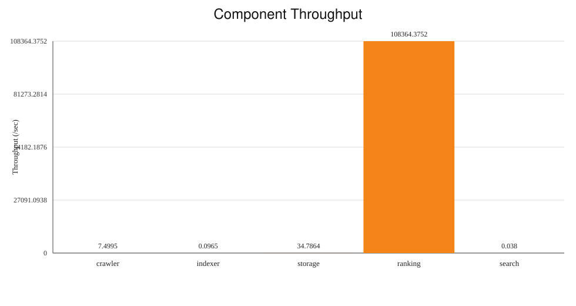

M6 Component Performance Results
Generated: 2026-04-21T07:44:06.233Z | Result dir: /Users/peterpopescu/classes/csci1380/csci1380_distributed_crawler/results/perf/m6_scaling_20260421_032502/n1_r2/benchmark/scale_m6_scaling_20260421_032502_n1_r2_20260421_033747
Latency

Throughput

Metrics Table
| Component | Latency (ms) | Throughput (/sec) | Samples | Unit |
|---|
| crawler | 133.3428 | 7.4995 | 1024 | pages/s |
| indexer | 10360.4 | 0.0965 | 10 | docs/s |
| storage | 28.7074 | 34.7864 | 100 | ops/s |
| ranking | 0.0088 | 108364.3752 | 80 | rankings/s |
| search | 26325.2474 | 0.038 | 4 | queries/s |